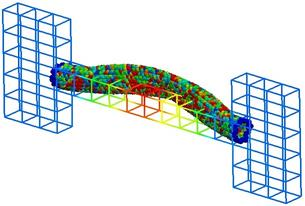

fix atc command
Syntax
fix <fixID> <group> atc <type> <parameter_file>
- fixID = name of fix
- group = name of group fix is to be applied
- type = thermal or two_temperature or hardy or field
thermal = thermal coupling with fields: temperature two_temperature = electron-phonon coupling with field: temperature and electron_temperature hardy = on-the-fly post-processing using kernel localization functions (see "related" section for possible fields) field = on-the-fly post-processing using mesh-based localization functions (see "related" section for possible fields)
- parameter_file = name of the file with material parameters. Note: Neither hardy nor field requires a parameter file
Examples
fix AtC internal atc thermal Ar_thermal.dat
fix AtC internal atc two_temperature Ar_ttm.mat
fix AtC internal atc hardy
fix AtC internal atc field
Description
This fix is the beginning to creating a coupled FE/MD simulation and/or an on-the-fly estimation of continuum fields. The coupled versions of this fix do Verlet integration and the post-processing does not. After instantiating this fix, several other fix_modify commands will be needed to set up the problem, e.g. define the finite element mesh and prescribe initial and boundary conditions.
The following coupling example is typical, but non-exhaustive:
# ... commands to create and initialize the MD system
# initial fix to designate coupling type and group to apply it to
# tag group physics material_file
fix AtC internal atc thermal Ar_thermal.mat
# create a uniform 12 x 2 x 2 mesh that covers region contain the group
# nx ny nz region periodicity
fix_modify AtC mesh create 12 2 2 mdRegion f p p
# specify the control method for the type of coupling
# physics control_type
fix_modify AtC thermal control flux
# specify the initial values for the empirical field "temperature"
# field node_group value
fix_modify AtC initial temperature all 30
# create an output stream for nodal fields
# filename output_frequency
fix_modify AtC output atc_fe_output 100
run 1000
likewise for this post-processing example:
# ... commands to create and initialize the MD system
# initial fix to designate post-processing and the group to apply it to
# no material file is allowed nor required
fix AtC internal atc hardy
# for hardy fix, specific kernel function (function type and range) to # be used as a localization function
fix AtC kernel quartic_sphere 10.0
# create a uniform 1 x 1 x 1 mesh that covers region contain the group
# with periodicity this effectively creats a system average
fix_modify AtC mesh create 1 1 1 box p p p
# change from default lagrangian map to eulerian
# refreshed every 100 steps
fix_modify AtC atom_element_map eulerian 100
# start with no field defined
# add mass density, potential energy density, stress and temperature
fix_modify AtC fields add density energy stress temperature
# create an output stream for nodal fields
# filename output_frequency
fix_modify AtC output nvtFE 100 text
run 1000
- the mesh’s linear interpolation functions can be used as the localization function
- by using the field option:
fix AtC internal atc field
fix_modify AtC mesh create 1 1 1 box p p p
...
Note coupling and post-processing can be combined in the same simulations using separate fixes.
Restart, fix_modify, output, run start/stop, minimize info
No information about this fix is written to binary restart files. The fix_modify options relevant to this fix are listed below. No global scalar or vector or per-atom quantities are stored by this fix for access by various output commands. No parameter of this fix can be used with the start/stop keywords of the run command. This fix is not invoked during energy minimization.
Restrictions
Thermal and two_temperature (coupling) types use a Verlet time-integration algorithm. The hardy type does not contain its own time-integrator and must be used with a separate fix that does contain one, e.g. nve, nvt, etc.
- Currently,
- the coupling is restricted to thermal physics
- the FE computations are done in serial on each processor.
Default
None
For detailed exposition of the theory and algorithms please see:
(Wagner) Wagner, GJ; Jones, RE; Templeton, JA; Parks, MA, “An atomistic-to-continuum coupling method for heat transfer in solids.” Special Issue of Computer Methods and Applied Mechanics (2008) 197:3351.
(Zimmerman2004) Zimmerman, JA; Webb, EB; Hoyt, JJ;. Jones, RE; Klein, PA; Bammann, DJ, “Calculation of stress in atomistic simulation.” Special Issue of Modelling and Simulation in Materials Science and Engineering (2004), 12:S319.
(Zimmerman2010) Zimmerman, JA; Jones, RE; Templeton, JA, “A material frame approach for evaluating continuum variables in atomistic simulations.” Journal of Computational Physics (2010), 229:2364.
(Templeton2010) Templeton, JA; Jones, RE; Wagner, GJ, “Application of a field-based method to spatially varying thermal transport problems in molecular dynamics.” Modelling and Simulation in Materials Science and Engineering (2010), 18:085007.
(Jones) Jones, RE; Templeton, JA; Wagner, GJ; Olmsted, D; Modine, JA, “Electron transport enhanced molecular dynamics for metals and semi-metals.” International Journal for Numerical Methods in Engineering (2010), 83:940.
(Templeton2011) Templeton, JA; Jones, RE; Lee, JW; Zimmerman, JA; Wong, BM, “A long-range electric field solver for molecular dynamics based on atomistic-to-continuum modeling.” Journal of Chemical Theory and Computation (2011), 7:1736.
(Mandadapu) Mandadapu, KK; Templeton, JA; Lee, JW, “Polarization as a field variable from molecular dynamics simulations.” Journal of Chemical Physics (2013), 139:054115.
Please refer to the standard finite element (FE) texts, e.g. T.J.R Hughes ” The finite element method ”, Dover 2003, for the basics of FE simulation.